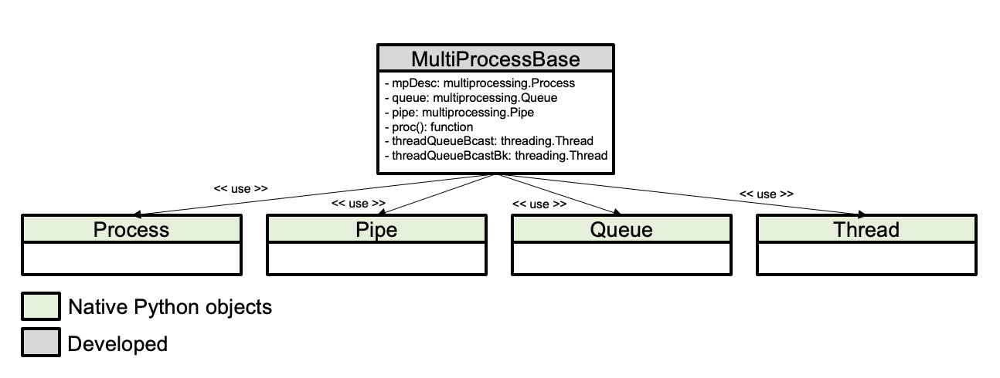
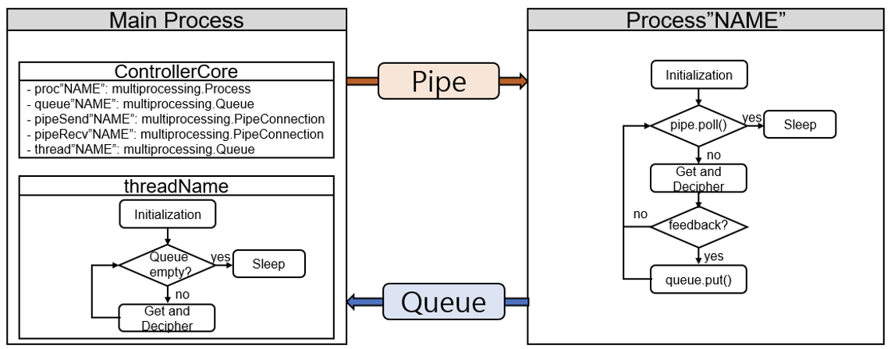

설계
고려사항
다양한 장치의 손쉬운 통합
확장 용이하고 다른 소프트웨어에 액세스 가능
각 장치는 자체 컨텍스트에서 실행
프로세스/스레드 간의 동기화
프로세스/스레드 활동 모니터링
서비스 로봇에서는 서비스 목적에 따라 카메라, 마이크, 로봇 등 다양한 장치를 사용한다. 이러한 장치의 손쉬운 통합을 고려하여 각 장치는 모듈화하여 플랫폼 형식으로 소프트웨어 구조를 설계한다. 새로운 목적의 서비스를 가진 로봇을 개발할 때 기존 로봇 소프트웨어 플랫폼을 적용하기 용이하고 개발 비용과 기간을 절약할 수 있는 장점을 가진다. 확장이 용이하고 다른 소프트웨어에 액세스가 가능하도록 Python을 사용하여 소프트웨어 구조를 설계
소프트웨어의 특징은 각 장치에 대한 모듈은 자체 컨텍스트로 실행하도록 설계한다. 일반적 소프트웨어 구조에서는 멀티스레딩(multi-threading)의 형태를 통하여 여러 작업을 수행할 수 있도록 설계한다. 하지만 Python의 경우 멀티 쓰레드 간의 교착 상태를 피하기 위해서 GIL(Global Interrupt Lock)을 사용한다. 이러한 GIL은 프로세스에 대해서 하나의 스레드만 실행되도록 만든다. 이러한 이유로 Python에서는 단일 스레드가 멀티스레드보다 더 높은 성능을 가지며 특히 CPU-bound 스레드에서 더 높은 연산이 필요하다. 이러한 문제점을 해결하기 위해 개발하는 소프트웨어 구조에서는 Python에서 제공하는 멀티프로세싱(multi-processing) 패키지를 사용하여 설계한다.
구조
SW Architecture of Multiprocess
 SSR(Seoultech Service Robot)은 고영 로봇틱스에서 제공한 EXA Robot 플랫폼을 의미함.
SSR(Seoultech Service Robot)은 고영 로봇틱스에서 제공한 EXA Robot 플랫폼을 의미함.프로세스
역할
기타
procMobileRobotCtrl
Kobuki 2, Stella b2, EXA-robot 등과 같은 로봇 제어 프로세스
Control Board
procROSRobotNode
로봇에 대한 전달받은 정보를 통해 Robot Node를 만드는 프로세스
Control Board
procROSNodeVelpub
cmd_vel topic을 생성하는 프로세스
Control Board
procROSNavNode
ROS2 nav2을 실행하는 프로세스
Control Board
procROSRealsenseNode
ROS2 Realsense을 실행하는 프로세스
Control Board
procExternalComm
외부 통신(TCP)과 관련된 프로세스
Control,APP Board
procFacerecogn
Facerecognition을 실행하는 포로세스
APP Board
procTextToSpeech
TextToSpeech 실행하는 프로세스
APP Board
procSpeechToText
SpeechToText 실행하는 프로세스
APP Board
소프트웨어 구조는 2가지 주요 구성 요소인 ControlCore, MainWindow로 설계한다. ControlCore는 메인 컨트롤러로서 장치, 인터페이스 및 제어 소프트웨어를 다룬다. MainWindow는 GUI로서 사용자 인터페이스의 신호 및 슬롯을 다룬다. 로봇 제어 시스템과 관련된 모든 객체 및 메소드는 GUI에서 분리한다. MainWindow와 ControlCore 간의 데이터 교환은 콜백 기능을 사용하여 구현한다. 또한 StellaB2, Kobuki2, SSR(E) 다양한 서비스 로봇에 적용할 수 있는 구조를 가진다.
SW Architecture Review
멀티 프로세서 클래스.
multiprocessing.Process class 인스턴스를 관리합니다.
multiprocessing.Pipe를 사용하여 메인 프로세스로부터 명령을 수신합니다.
multiprocessing.Queue를 사용하여 메인 프로세스에 feedback을 보냅니다.
빅 데이터(예: 카메라 이미지 데이터)의 경우 Backup queue가 구현됩니다.
각 queue는 스레드 내에서 주기적으로 읽혀지며, 데이터는 콜백 함수(signal)의 형태로 메인 프로세스로 전송됩니다 - Event Driven

프로세서간 통신(IPC) 구조
Pipe와 Queue를 사용하여 통신 진행
Main process -> Feature Process : pipe (1:1) communication
Feature Process -> Main Process : queue (N:N) communication (메인 이외의 다른 프로세서에서 데이터 사용 가능)
